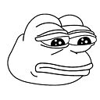
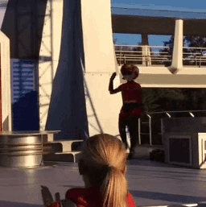

to conjure a cartoon is to potentially create a Pepe, that which transcends you and transcends all morality/ becomes a symbol of any and everything (the whims of the subject), becomes used for whimsy and propaganda with no distinction. uncontrollable essence, spiritual chaos.

it is possible to render a cartoon visually but that visualization is not the thing itself. the cartoon-essence is a distinct form from any art-object depicting it. a cartoon could be presented in any medium and still retain its form/intent. The intent of a cartoon can be changed by anyone at any time. cartoons cannot be inherently imbued (by the creator) with a moral composition.

What is true of a Cartoon?
•assemblage of lines/shapes depicting sentience
•complex network of roots, stems, and leaves
•emotional-manipulation-essence-mechanism
•potential(comic book)/simulated-potential(animated cartoon) motion
•psychological-virus
•joy of my life